หมวดไขควง · WYNNTOOLS (วินส์ทูลส์)
เครื่องมือประเภทไขควง WYNNTOOLS
ไขควงตอกแกน CR-V ทนแรงตอก ชุดไขควงเปลี่ยนหัวสำหรับงานทั่วไป ชุดไขควงจิ๋วซ่อมนาฬิกา-คอม-มือถือ ตั้งแต่ 6 ถึง 45 ชิ้น และดอกถอนเกลียวซ้ายสำหรับถอนน็อตหรือท่อที่หักคา
📋 27 รายการ
✔ ผู้นำเข้าโดยตรง
🏷️ ราคาปลีก-ส่ง
🚚 ส่งทั่วไทย
เครื่องมือประเภทไขควง — 27 รายการ
ไขควงตอก และไขควงแม่เหล็ก Impact & Magnetic Screwdrivers 7 รายการ
วัสดุ: CR-V 6150 / SK-55
| รูป | รหัส | ชื่อสินค้า | ขนาด | จำนวน/ลัง | วัสดุ |
|---|---|---|---|---|---|
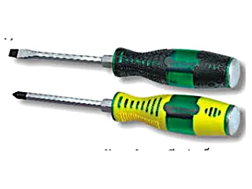 |
W0345A | ไขควงตอก แม่เหล็กScrew Driver ทุกเบอร์ในตระกูลนี้หน้าตาเหมือนกัน ต่างที่ขนาด ปลายหัวรมดำและมีแม่เหล็ก · ด้ามโพลิเมอร์กันไขควงติดเหล็กรองรับการตอก |
6X100mm | 12/144 | CR-V 6150 |
| W0345B | 6X125mm | 12/144 | CR-V 6150 | ||
| W0345C | 6X150mm | 12/144 | CR-V 6150 | ||
| W0345E | 8X150mm | 12/120 | CR-V 6150 | ||
| W0345F | 8X200mm | 12/120 | CR-V 6150 | ||
| W0345H | 8X300mm | 12/120 | CR-V 6150 | ||
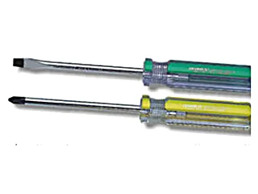 |
W0393A | ไขควงแม่เหล็กแฉก/แบน หัว 3 มม.Screw Driver ด้ามจับโพลิเมอร์โปร่งใส ปลายรมดำและติดแม่เหล็ก |
3X75mm | 30/1800 | SK-55 |
ชุดไขควงเปลี่ยนหัว และไขควงพับพกพา Precision Tool Kits & Folding Screwdrivers 6 รายการ
วัสดุ: CR-V 6150
| รูป | รหัส | ชื่อสินค้า | ขนาด | จำนวน/ลัง | วัสดุ |
|---|---|---|---|---|---|
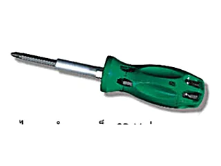 |
W2089A | ชุดไขควงเปลี่ยนหัว 7 แบบ แฉก/แบนMetalive Precision Tool Kit | PH0 PH1 PH2 PH3 · แบน 5.0 6.0 7.0 | 12/144 | CR-V |
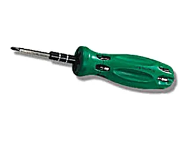 |
W0352A | ชุดไขควงเปลี่ยนหัว 7 แบบMetalive Precision Tool Kit | T3 T5 T6 T7 · แฉก 2.0 · แบน 1.5 · Y 3.0 | 12/288 | CR-V |
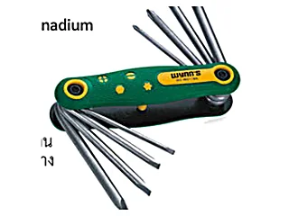 |
W0179A | ชุดไขควงพับแบบพกพา หัวแฉก/แบนMetalive Precision Tool Kit | แฉก PH0 PH1 PH2 PH3 · แบน 3.0 5.0 6.0 7.0 | 12/120 | CR-V |
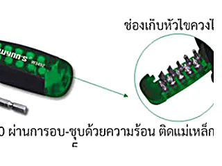 |
W3492 | ชุดไขควงแม่เหล็กเปลี่ยนหัว 12 ชิ้นAdjustable Metalive Precision Tool Kit มีช่องเก็บหัวไขควงในด้าม ติดแม่เหล็ก |
แฉก PH0 PH1 PH3 · แบน 3.0 5.0 6.0 · T15 T20 PZ1 PZ2 | 6/144 | CR-V 6150 |
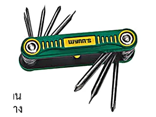 |
W0407 | ชุดไขควงพับแบบพกพา เล็กMetalive Precision Tool Kit | แฉก 2.5 3.5 4.5 5.5 · แบน 2.5 3.5 4.5 5.5 | 15/180 | CR-V |
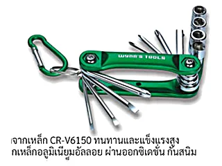 |
W0568 | ชุดไขควง/บล็อกพับแบบพกพา 12 ชิ้น12pc Socket & Screwdriver Bits Set ด้ามเก็บอลูมิเนียมอัลลอย ผ่านออกซิเดชั่น กันสนิม เหมาะสำหรับพกพา |
บล็อก 1/4" เบอร์ 6 8 9 10 มม. · แฉก PH0 PH1 PH2 PH3 · แบน 3.0 4.0 5.0 | 6/24 | CR-V 6150 |
ชุดไขควงซ่อมอิเล็กทรอนิกส์ / นาฬิกา / มือถือ Precision & Telecom Screwdriver Sets 8 รายการ
วัสดุ: CR-V 6150 / S2
| รูป | รหัส | ชื่อสินค้า | ขนาด | จำนวน/ลัง | วัสดุ |
|---|---|---|---|---|---|
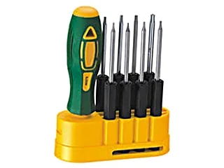 |
W0276 | ชุดไขควงหัวหกเหลี่ยมดาว TorxMetalive Precision Tool Kit เหมาะกับอุปกรณ์อิเล็กทรอนิกส์ คอมพิวเตอร์ มือถือ ซ่อมนาฬิกา |
T3 T4 T5 T6H T7H T8H T9H T15H | 6/144 | CR-V 6150 |
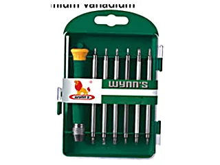 |
W0291B | ชุดไขควงสลับหัว 7 ชิ้น7pcs Telecommunication Tools Set | T4-H1.5 · T5-T8 · T6-T10 · T7-H2.0 · PH00-1.5 · PH0-3.0 | 6/144 | CR-V 6150 |
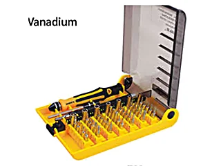 |
W3476 | ชุดไขควง 45 ชิ้น ซ่อมอุปกรณ์อิเล็กทรอนิกส์45pcs Telecom Set | T3-T20 · H0.9-H4.0 · PH000-PH2 · แบน 1.0-4.0 · M2.5-M5.5 | 50 | CR-V 6150 |
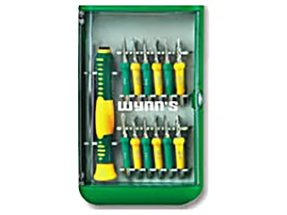 |
W2580A | ชุดไขควงซ่อม 14 ชิ้น14pcs Screw Drivers Set ความแข็ง HRC54-56 · เปลี่ยนหัวได้ 12 แบบ มีที่คีบจับหัวไขควง |
T2 T3 T4 T5 T6 · PH000 PH00 PH0 · แบน 2.0 2.3 · Y0 · M2.6 | 14/96 | CR-V 6150 |
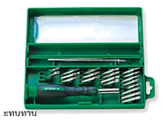 |
W0582 | ชุดไขควง Precision 22 ชิ้น22pcs Precision Screw Drivers Set ด้ามจับ TPR+PP · หัวไขควง 20 แบบ |
T5-T20 · แบน 1.5-4.0 · PH000 PH00 PH0 PH1 · Y3.0 · 2.6mm | 10/40 | CR-V 6150 |
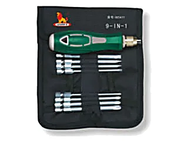 |
W0411A | ชุดไขควงกระเป๋าช่างพกพา 9 ชิ้น9pcs Screw Drivers Set | PH0 PH1 PH2 PH3 · แบน 3.0 4.0 5.0 6.0 | 6/72 | CR-V |
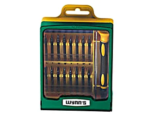 |
W0356A | ชุดไขควงซ่อมคอม ซ่อมมือถือ 34 ชิ้น34pcs Telecom Set | หัวย M2.6 PZ0-H4 · H1.5-3.0 · T3-T10 · หัวจุด หัวแบนงอ หัวเข็มแหลม | 6/96 | S2 เหล็กกล้าเครื่องมือ |
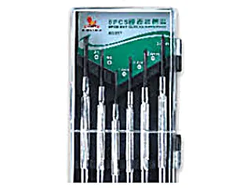 |
W0557 | ชุดไขควงซ่อม 6 ชิ้น หัวแฉก/แบน6pcs Screw Drivers Set ด้ามจับชุบโครเมี่ยม เหมาะกับซ่อมนาฬิกา คอม มือถือ |
PH0 PH1 · แบน 1.4 2.0 2.4 3.0 | 24/96 | CR-V 6150 |
ดอกถอนเกลียว และหัวไขควงดอกสว่าน Screw/Pipe Extractors & Driver Bits 6 รายการ
วัสดุ: SK-55 / CR-V / S2
| รูป | รหัส | ชื่อสินค้า | ขนาด | จำนวน/ลัง | วัสดุ |
|---|---|---|---|---|---|
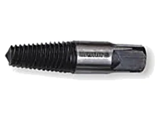 |
W3313A | ถอนเกลียวซ้าย 4 หุนPipe Extractor ใช้ถอนก๊อกน้ำที่หักคาท่อน้ำหรือเกลียวที่คาท่ออยู่ |
4 หุน = 1/2 นิ้ว | 20/200 | SK-55 |
| W3313B | ถอนเกลียวซ้าย 6 หุนPipe Extractor ตัว 6 หุน ถอนท่อหักขนาด 4 หุนได้ |
6 หุน = 3/4 นิ้ว | 10/100 | SK-55 | |
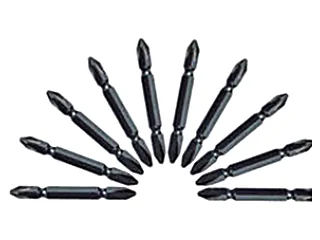 |
W0618 | หัวไขควงดอกสว่านหัวแฉก 10 ชิ้น10pcs Screw Driver Bit Set ความแข็ง HRC58-62 มืออาชีพ ขันได้เร็วและง่าย |
2# 65mm | 10/100 | S2 |
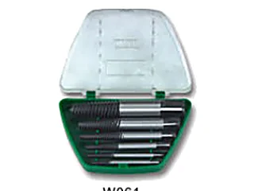 |
W0611 | ถอนเกลียวซ้ายชุด 5 ตัวScrews Extractor | 3-6mm(1/8"-1/4") · 6-8mm(1/4"-5/16") · 8-11mm(5/16"-7/16") · 11-14mm(7/16"-9/16") · 14-18mm(9/16"-3/4") | 10/100 | CR-V |
| W0612 | ถอนเกลียวซ้ายชุด 6 ตัวScrews Extractor | 3-6mm · 6-8mm · 8-11mm · 11-14mm · 14-18mm · 18-25mm(3/4"-1") | 10/100 | CR-V | |
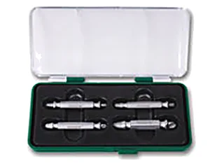 |
W3314 | ถอนหัวสกรู หัวน็อต ตะปูScrews Extractor ใช้ถอนเกลียว ท่อ น็อตที่ขาดได้เร็ว ง่าย และสะดวก |
1# 3-5mm · 2# 4-8mm · 3# 5-10mm · 4# 6-12mm | 12/96 |
เจอรหัสที่ต้องการแล้ว? กดที่รหัสเพื่อถามราคา
กดที่รหัสสินค้าในตาราง ระบบจะเปิด LINE พร้อมข้อความให้แล้ว หรือทักมาบอกรายการที่ต้องการก็ได้ ทีมงานเช็คสต็อกและแจ้งราคาส่งให้